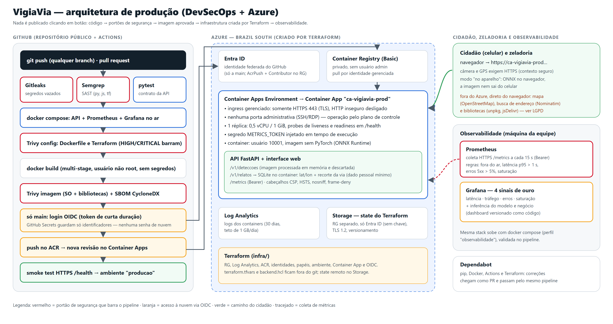
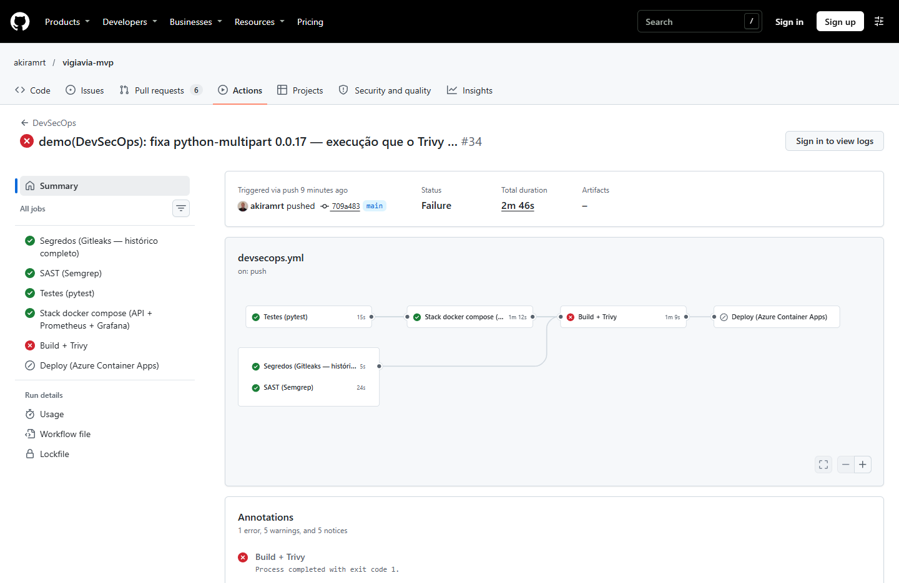
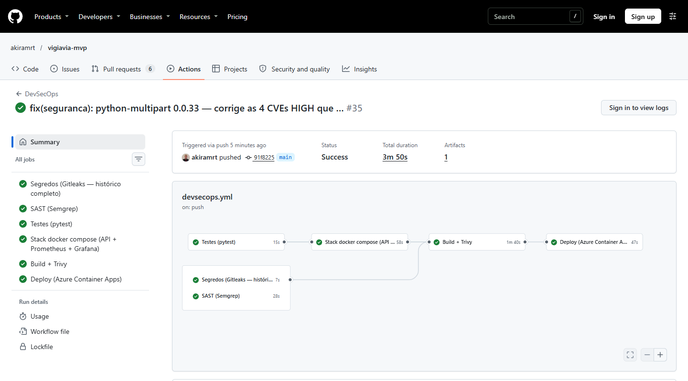
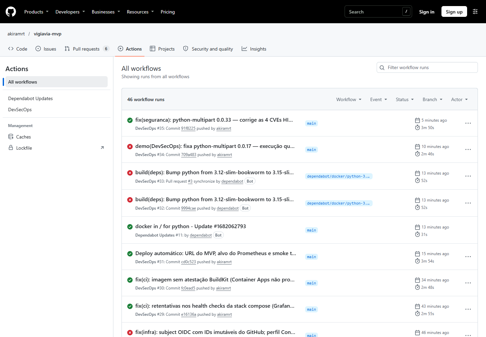
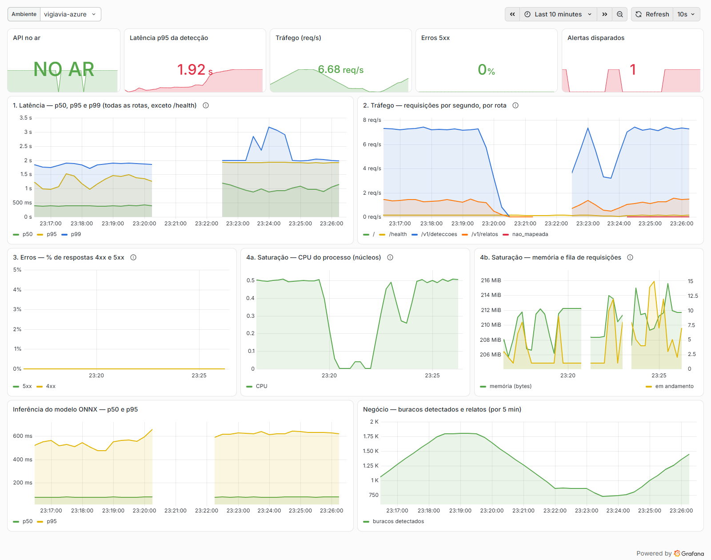
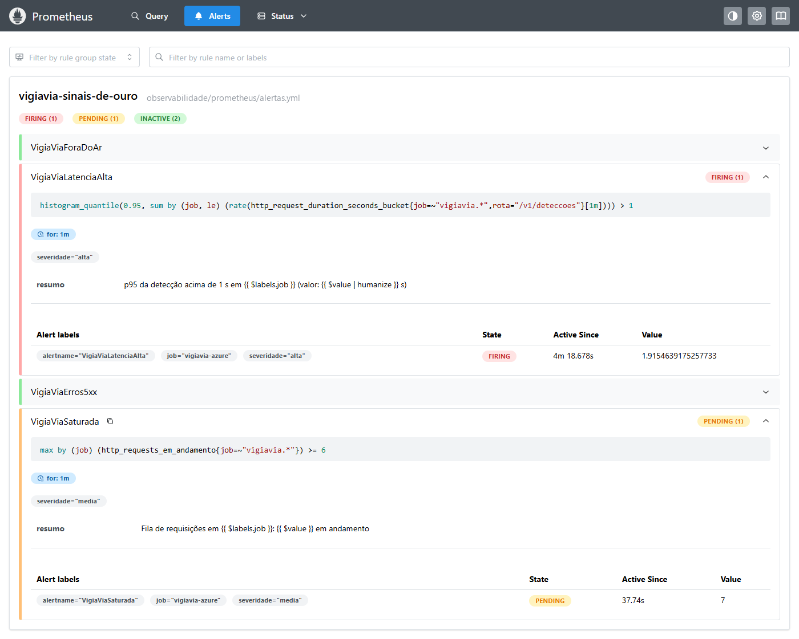
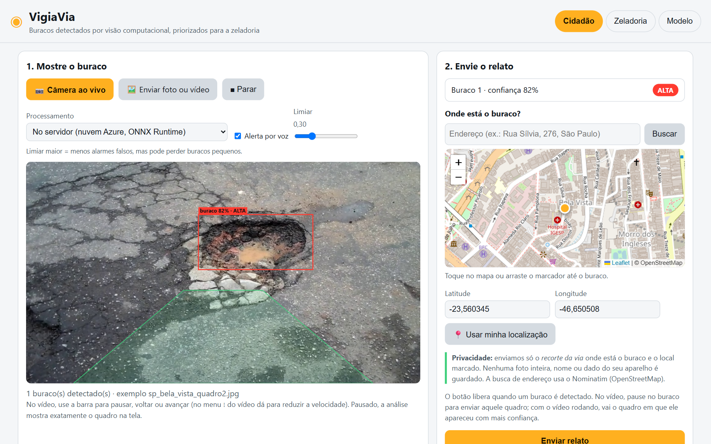
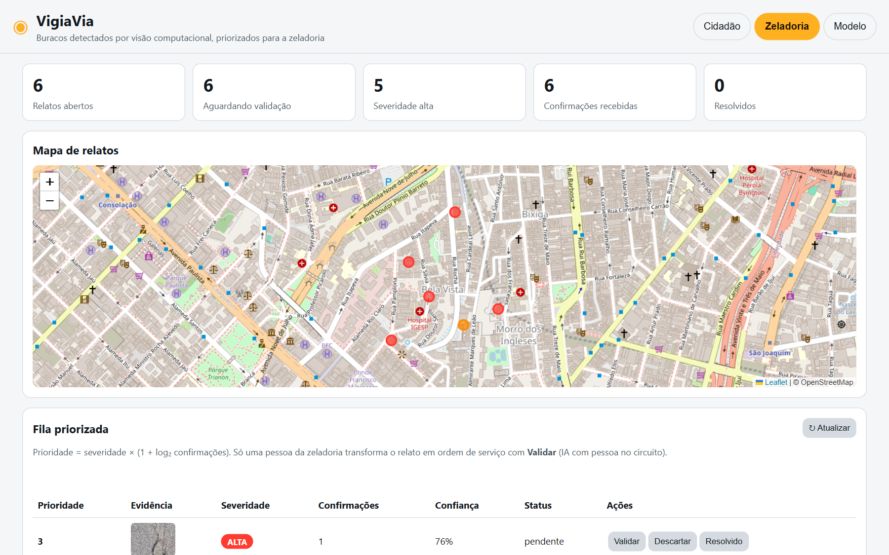

MVP de detecção de buracos em vias públicas publicado na nuvem com pipeline DevSecOps, infraestrutura como código e observabilidade
Disciplina Secure DevOps Tools & Cloud Computing · Profs. Gabriel Arcanjo e Cleórbete Santos
| Nome | RM |
|---|---|
| Deivison Pertel | 550803 |
| Eduardo Akira Murata | 98713 |
| Wesley Souza de Oliveira | 97874 |
| MVP publicado (Azure) | {{URL}} |
| Repositório público | {{REPO}} |
| Pipeline DevSecOps | {{REPO}}/actions/workflows/devsecops.yml |
| Execução barrada (Trivy) | {{REPO}}/actions/runs/41953686302 |
| Execução corrigida + deploy | {{REPO}}/actions/runs/{{RUN_CORRIGIDO}} |
| Dockerfile · Compose · Terraform | Dockerfile · docker-compose.yml · infra/ · devsecops.yml |
| Componente de visão computacional | github.com/akiramrt/vigiavia-visao-computacional |
Entrega única por equipe · versão revisada em {{DATA}} (a primeira é de 05/11/2026; as correções estão na seção 12) · todas as evidências deste documento são reais, coletadas do ambiente publicado (Azure Brazil South), do GitHub Actions e do Prometheus/Grafana.
O VigiaVia detecta buracos em imagens de vias públicas (modelo YOLO26n exportado para ONNX) e entrega à zeladoria um relato único, georreferenciado e priorizado. Nesta disciplina, o MVP foi colocado no ar no Azure Container Apps, com toda a infraestrutura em Terraform, imagem Docker enxuta e sem root, um pipeline GitHub Actions que barra segredos, código inseguro e vulnerabilidades antes de qualquer deploy, e Prometheus + Grafana medindo os quatro sinais de ouro do serviço publicado.
| Critério (peso) | O que foi entregue | Evidência |
|---|---|---|
| Container & IaC (5,0) | Dockerfile multi-stage python:3.12-slim, usuário 10001, HEALTHCHECK, nenhum segredo na imagem; stack completa no docker compose (API endurecida + Prometheus + Grafana). Terraform com state remoto no Azure Storage (Entra ID, sem chave), .tfvars e backend.hcl fora do git, ingress somente HTTPS e nenhuma porta administrativa. | Seções 3 e 4; docs/evidencias/azure_configuracao.txt; planos em docs/evidencias/terraform_plan_*.txt |
| Pipeline DevSecOps (4,0) | Gitleaks (histórico completo), Semgrep, pytest, validação do compose, Trivy (IaC/Dockerfile e imagem), SBOM; em todo push. Credenciais via OIDC (sem senha de nuvem) e identificadores em GitHub Secrets. Deploy automático da main com smoke test que confere o commit no ar. Execução barrada e a corrigida. | Seção 5; runs 41953686302 (barrado) e {{RUN_CORRIGIDO}} (corrigido) |
| Observabilidade (3,0) | API instrumentada (/metrics protegido por token); Prometheus coletando o MVP publicado via HTTPS; dashboard Grafana como código com latência, tráfego, erros e saturação; 4 regras de alerta; alerta disparado sob carga real; um reinício sob carga foi diagnosticado até a causa raiz, corrigido e verificado em produção. | Seção 6; prints do Grafana e do Prometheus |
| Documentação (2,0) | Diagrama de arquitetura, responsabilidade compartilhada, onde moram os dados pessoais (LGPD), estimativa de custo com preços oficiais, README reproduzível com a ficha técnica. | Seções 2, 7, 8, 10 e README |
| Item | VigiaVia |
|---|---|
| Nome do produto | VigiaVia — zeladoria inteligente de vias públicas |
| Cidadão e território | Quem circula pelas vias (motociclistas, ciclistas, pedestres, motoristas, usuários de ônibus) e os agentes de zeladoria das subprefeituras. Piloto: centro de São Paulo (Bela Vista). |
| Problema, em uma frase | Buracos causam acidentes e custos, e sua identificação depende de chamados manuais, lentos, imprecisos e duplicados (113,1 mil pedidos de tapa-buraco em SP em 2025). |
| Proposta de valor | Detectar buracos automaticamente com as câmeras que já circulam pela cidade e entregar à zeladoria um relato único, georreferenciado e priorizado por buraco — com privacidade e validação humana. |
| Arquitetura: componentes | API FastAPI + interface web (cidadão e zeladoria) · detector YOLO26n em ONNX Runtime · fila de relatos com deduplicação geográfica · Azure Container Apps + ACR + Log Analytics (Terraform) · pipeline DevSecOps (GitHub Actions) · Prometheus + Grafana. |
| Fontes de dados | RDD2022 (treino do modelo, CC BY-SA 4.0); relatos e detecções enviados pelos cidadãos; dados de demonstração simulados na Bela Vista (marcados como demonstracao). |
| Modelos de IA utilizados | YOLO26n treinado no RDD2022 (mAP@0,5 = 0,585 no teste), exportado para ONNX; executado no servidor (ONNX Runtime) ou no navegador (onnxruntime-web). |
| URL do MVP e repositório | {{URL}} · {{REPO}} |
| Indicadores de impacto | Tempo entre detecção e reparo · % de chamados duplicados evitados · buracos detectados por km rodado · precisão confirmada pela zeladoria. Operação: disponibilidade, p95 de latência, taxa de erros e saturação. |
| ODS conectados | 11.2 (transporte seguro: reparo mais rápido e alerta ao condutor reduzem quedas de motos e bicicletas) · 11.3 (gestão participativa: o cidadão relata e confirma, e a fila prioriza o que a população aponta) · 9.1 (infraestrutura resiliente: reparo antes de o buraco crescer e degradar a base do pavimento) · 3.6 (menos lesões e mortes no trânsito causadas por buracos). Cada meta é acompanhada pelos indicadores da linha acima. |

/metrics com token.| Componente | Função e decisão de segurança |
|---|---|
Azure Container Apps ca-vigiavia-prod | Executa o container da API (0,5 vCPU / 1 GiB, 1 réplica fixa: sem cold start). Ingress gerenciado com certificado TLS, HTTP inseguro desligado; a porta 8000 do container só é alcançável pelo ingress. Plataforma serverless: não existe SSH/RDP. |
Azure Container Registry acrvigiavia2fplg | Registro privado da imagem aprovada. Usuário admin desligado: o app puxa a imagem com identidade gerenciada (AcrPull) e o pipeline publica com identidade federada (AcrPush). |
| Identidades gerenciadas + Entra ID | id-vigiavia-prod-app (pull da imagem) e id-vigiavia-prod-github (deploy). A segunda só aceita tokens OIDC da branch main deste repositório; papéis restritos ao ACR e ao grupo de recursos. |
Log Analytics log-vigiavia-prod | Logs da plataforma e do container (stdout/stderr), retenção de 30 dias e teto de 1 GB/dia (controle de custo). |
Storage sttfvigiavia64dba1 (outro grupo) | State remoto do Terraform: autenticação Entra ID, chave compartilhada desligada, TLS 1.2, sem acesso público, versionamento e exclusão reversível por 14 dias. |
| GitHub Actions | Pipeline DevSecOps: portões de segurança em todo push; publicação e deploy só a partir da main. |
| Prometheus + Grafana | Rodam na máquina da equipe, presos a 127.0.0.1, coletando o MVP publicado via HTTPS a cada 15 s (Bearer token). O mesmo conjunto sobe com docker compose --profile observabilidade. |
O que o VigiaVia guarda (relatos e logs) fica em Brazil South (São Paulo), o que reduz a latência e evita transferência internacional desses dados. Alguns pedidos, porém, saem direto do navegador do cidadão para serviços fora do Azure: as bibliotecas da interface (unpkg e jsDelivr), as imagens do mapa (OpenStreetMap) e — só quando o cidadão usa a busca de endereço — o texto digitado (Nominatim, da OpenStreetMap Foundation, no exterior). A seção 7 trata esses fluxos como transferência internacional (LGPD, art. 33).
dependencias instala os pacotes; a imagem final recebe só o resultado, o código, as configurações e o modelo .onnx.python:3.12-slim-bookworm com apt-get upgrade (correções do SO) e sem PyTorch: a inferência usa ONNX Runtime. Imagem de 174 MB comprimida no ACR.vigia (UID 10001, sem shell) e USER 10001; /dados é o único diretório gravável.METRICS_TOKEN entra só em tempo de execução (segredo do Container App); o .dockerignore exclui .env, *.tfvars, infra/, .git e testes.HEALTHCHECK em /health; uvicorn com --proxy-headers e --no-server-header.ARG COMMIT e aparece no /health: o smoke test prova que a versão nova está no ar.read_only, tmpfs /tmp), cap_drop: [ALL], no-new-privileges e limite de 1 GB de memória.METRICS_TOKEN obrigatório e lido do .env (fora do git); senha do Grafana idem.observabilidade/), provisionados automaticamente.up == 1).Na própria aplicação: limite de 8 MB e 40 MP por imagem, a imagem enviada para detecção é descartada após a resposta, e todas as respostas levam cabeçalhos de segurança (CSP restritiva, HSTS, X-Content-Type-Options: nosniff, X-Frame-Options: DENY, Permissions-Policy). O /metrics exige Bearer token comparado em tempo constante (hmac.compare_digest).
| Requisito | Como foi atendido |
|---|---|
| Tudo em código | infra/main.tf cria grupo de recursos, Log Analytics, ACR, identidades gerenciadas, RBAC, ambiente e app do Container Apps e a credencial federada do GitHub. Provedores fixados (azurerm 4.81.0, random 3.9.1). O drift detectado (perfil de carga “Consumption” que o Azure adiciona) foi declarado no código. |
| State fora do repositório | Backend azurerm no Storage sttfvigiavia64dba1, criado por infra/bootstrap/criar_backend.sh: acesso por Entra ID (use_azuread_auth), chave compartilhada desligada, versionamento e retenção de exclusão. O backend.hcl é gerado localmente e ignorado pelo git. |
.tfvars fora do repositório | terraform.tfvars (assinatura e metrics_token) é gerado por scripts/preparar_segredos.py e está no .gitignore (*.tfvars, *.tfstate*, *.tfplan, backend.hcl, .env). A variável do token é sensitive. |
| Porta admin nunca aberta a 0.0.0.0/0 | Não há VM nem porta administrativa: o único ponto de entrada é o ingress HTTPS (allow_insecure_connections = false, sem portas adicionais). A operação acontece pelo plano de controle do Azure, autenticado e auditado. O Trivy (config) e o Semgrep (p/terraform) revisam o Terraform em todo push. |
| Menor privilégio | ACR sem admin; app com AcrPull; identidade do GitHub com AcrPush só no ACR e Contributor só no grupo rg-vigiavia-prod; credencial federada com subject que usa os IDs imutáveis do dono e do repositório (repo:akiramrt@128194173/vigiavia-mvp@1446365122:ref:refs/heads/main). |
| Revisão humana do apply | Cada mudança gera um terraform plan -out salvo como evidência (docs/evidencias/terraform_plan_*.txt, sem segredos; os IDs de assinatura, tenant e identidades foram mascarados em 09/11 — são identificadores, não credenciais); o apply do plano revisado é executado por um integrante. Num ambiente novo, a ordem é: base com -target, primeira imagem publicada pelo pipeline e depois o Container App (seção 10). |
{{AZURE}}
Trecho de docs/evidencias/azure_configuracao.txt (Azure CLI): ingress só HTTPS e sem portas adicionais, ACR sem admin, OIDC restrito à main, papéis mínimos e state protegido.
O workflow devsecops.yml roda em todo push (qualquer branch), em pull requests e sob demanda. Permissões mínimas por padrão (contents: read); id-token: write só nos jobs que falam com o Azure. As actions de terceiros são fixadas pelo SHA do commit (tags podem ser movidas) e o Dependabot acompanha pip, Docker, Actions e Terraform.
| Job / portão | O que barra |
|---|---|
| Segredos (Gitleaks) | Segredos em todo o histórico (fetch-depth: 0) — apagar a linha num commit novo não basta. Binário com versão e SHA-256 conferidos. |
| SAST (Semgrep) | Código inseguro em Python e JavaScript, segredos, Dockerfile e Terraform (p/python p/javascript p/secrets p/dockerfile p/terraform, --error). |
| Testes (pytest) | Regressões da API: detecção real com o modelo ONNX, deduplicação, validação humana, proteção do /metrics, cabeçalhos. |
| Stack docker compose | Stack que não sobe ou Prometheus que não coleta a API. |
| Build + Trivy | Configuração insegura (Dockerfile/Terraform) e vulnerabilidades HIGH/CRITICAL corrigíveis no SO e nas bibliotecas da imagem; gera o SBOM CycloneDX (artefato do run). |
| Push no ACR | Só a imagem aprovada, só na main, com login OIDC. |
| Deploy + smoke test | az containerapp update com a tag do commit; o smoke test só passa quando o /health público responde com o commit implantado. |
AZURE_CLIENT_ID, AZURE_TENANT_ID, AZURE_SUBSCRIPTION_ID, ACR_NOME, ACA_NOME, AZURE_RG); as Variables PUBLICAR_IMAGEM e DEPLOY_HABILITADO ligam a publicação. O único segredo de verdade, o METRICS_TOKEN, vive no .tfvars local e no cofre de segredos do Container App.Demonstração controlada. O commit 709a483 fixou o python-multipart (o parser dos uploads de imagem do cidadão) na versão antiga 0.0.17. Os testes passaram (a funcionalidade não muda), mas o Trivy encontrou 4 vulnerabilidades HIGH na imagem, entre elas a CVE-2024-53981 (negação de serviço pelo boundary do multipart) e a CVE-2026-24486 (escrita arbitrária de arquivo por path traversal). O run 41953686302 parou no job “Build + Trivy”: a imagem não foi publicada, o deploy foi pulado e a produção continuou no commit anterior (cd0c523, conferido no /health).

{{TRIVY}}
A correção (91f8225) voltou para a versão 0.0.33. O run {{RUN_CORRIGIDO}} passou por todos os portões, publicou a imagem no ACR e fez o deploy automático; o smoke test confirmou o commit novo no ar.

{{SMOKE}}
Log do job de deploy: os *** são valores de GitHub Secrets (nome do app e do registro) mascarados automaticamente pelo Actions.

A API exporta métricas Prometheus próprias (http_requests_total{method,rota,status}, histograma http_request_duration_seconds, gauge http_requests_em_andamento, vigiavia_inferencia_segundos, vigiavia_buracos_detectados_total, vigiavia_relatos_total) além das métricas de processo (CPU e memória). O rótulo rota usa o modelo da rota (ex.: /v1/relatos/{rid}), nunca o caminho bruto: sem explosão de cardinalidade e sem dado pessoal em métrica.
| Sinal | Consulta (PromQL) no dashboard | Alerta |
|---|---|---|
| Latência | histogram_quantile(0.95, sum by (le) (rate(http_request_duration_seconds_bucket{rota="/v1/deteccoes"}[5m]))) + p50/p95/p99 por minuto | VigiaViaLatenciaAlta: p95 da detecção > 1 s por 1 min |
| Tráfego | sum by (rota) (rate(http_requests_total[1m])) | — |
| Erros | sum(rate(http_requests_total{status=~"5.."}[1m])) / sum(rate(http_requests_total[1m])) (e 4xx) | VigiaViaErros5xx: > 5% por 2 min |
| Saturação | http_requests_em_andamento, rate(process_cpu_seconds_total[1m]) (limite: 0,5 vCPU) e memória residente (limite: 1 GiB) | VigiaViaSaturada: ≥ 6 requisições em andamento por 1 min |
| Disponibilidade | up do alvo publicado | VigiaViaForaDoAr: up == 0 por 1 min |
Como foi medido. O Prometheus da equipe (127.0.0.1) coleta https://…azurecontainerapps.io/metrics a cada 15 s com o token em arquivo (credentials_file). Para provocar os sinais, scripts/gerar_carga.py disparou {{CARGA_CFG}} contra o MVP publicado. Resultado do gerador: {{CARGA_RES}}. {{ALERTAS_TXT}} Os registros brutos estão em docs/evidencias/carga/.


VigiaViaLatenciaAlta em FIRING (p95 = 1,92 s) e VigiaViaSaturada em PENDING (7 requisições em andamento). O caminho local do arquivo de regras, ao lado do nome do grupo, foi trocado na imagem pelo caminho no repositório.Leitura. Com 1 réplica de 0,5 vCPU a detecção satura em cerca de {{RPS}} req/s: a CPU encosta no limite, a fila chega a 15 requisições em andamento, o p95 passa de 1 s e o alerta de latência dispara — sem nenhum 5xx registrado pela API. O dashboard também revelou um efeito colateral real: às 23:23, cerca de 90 s após o início da rodada de 16 clientes, o processo reiniciou (métrica process_start_time_seconds, queda no tráfego) — 0,1% das requisições do gerador falharam.
docs/evidencias/terraform_plan_6_probes.txt e aplicado por um integrante). Reteste com 16 clientes: o container ainda reiniciou 2 vezes (restartCount = 2 no Azure; o process_start_time_seconds muda duas vezes em docs/evidencias/carga/amostras2.txt). Hipótese refutada.POST /v1/deteccoes é async e executava a decodificação da imagem e a inferência ONNX dentro do event loop: com a fila de detecções, o /health consultado pela probe esperava atrás de todas elas. Um teste de regressão reproduziu o defeito — o /health esperou 1,22 s atrás de uma única inferência lenta.anyio.to_thread), com no máximo 2 inferências simultâneas (VIGIAVIA_INFERENCIAS_SIMULTANEAS); o teste de regressão agora passa no pipeline. O timeout de 5 s ficou como defesa em profundidade.b12e62e): {{RETESTE3}}.Observação: nesta máquina o Docker Desktop não iniciou (WSL desativado), então Prometheus e Grafana rodaram como binários nativos, presos a 127.0.0.1, com as mesmas regras de alerta e o mesmo dashboard do repositório; só a configuração de coleta foi adaptada para apontar para o MVP publicado (sem o alvo local da API). A stack em contêineres é validada pelo job de compose a cada push.
| Microsoft (provedor) | Compartilhado | Equipe VigiaVia (cliente) |
|---|---|---|
| Data centers, hardware, rede física, hipervisor e sistema dos hosts; plano de controle e orquestração do Container Apps; disponibilidade e correções da plataforma; certificado e terminação TLS do ingress; criptografia em repouso padrão do Storage e do ACR; serviço do Entra ID. | Identidade (o Entra ID fornece; nós configuramos identidades, RBAC e a federação OIDC); rede (a plataforma isola; nós decidimos o que é exposto — só HTTPS); logs (a plataforma coleta; nós definimos retenção, acesso e custo). | Código e dependências; imagem base e suas correções (rebuild + Trivy); configuração do container (não root, probes, limites); segredos (METRICS_TOKEN, state); IaC e proteção do state; cadeia de CI/CD (actions fixadas, OIDC); dados dos cidadãos (classificação, minimização, retenção, LGPD); monitoramento e resposta a alertas. |
| Dado | Onde fica | Tratamento e retenção |
|---|---|---|
| Imagem enviada para detecção (pode conter rostos e placas) | Na memória do container durante a requisição (uploads acima de 1 MB passam por um arquivo temporário do servidor web, apagado ao fim da requisição) | Não é armazenada: descartada após a resposta. Também é possível detectar no próprio navegador (onnxruntime-web), sem enviar a imagem. |
| Relato: latitude/longitude, severidade, data/hora e recorte da via | SQLite em /dados no container do Azure Container Apps (Brazil South) | Minimização: só o recorte do buraco (JPEG ≤ 200 KB validado), sem identificação do cidadão. A localização pode revelar onde alguém estava — por isso não há login, nome nem identificador de aparelho. No MVP o disco é efêmero (dados recriados a cada revisão); em produção: banco gerenciado em Brazil South com criptografia, backup e política de retenção (ex.: 12 meses após o reparo). |
| Endereço IP do cliente nos logs de acesso | Log Analytics log-vigiavia-prod (Brazil South) | Dado pessoal para fins de segurança; retenção de 30 dias, acesso restrito por RBAC, teto de 1 GB/dia. |
| Endereço digitado na busca e área visível do mapa | Nominatim (OpenStreetMap Foundation, Reino Unido), só quando o cidadão clica em Buscar | O VigiaVia não guarda; o serviço recebe o texto, o IP do navegador e a origem do site. Transferência internacional (art. 33): a tela avisa o uso do Nominatim e há alternativa sem envio (tocar no mapa ou usar o GPS). Em produção: geocodificação própria ou de provedor no Brasil, com contrato. |
| IP do navegador nos pedidos de mapa e de bibliotecas | OpenStreetMap (tiles), unpkg e jsDelivr (CDNs globais) | Pedidos técnicos do navegador; a página manda o Referer só com a origem (sem caminho) e só para o OpenStreetMap, que o exige. Em produção: servir bibliotecas e tiles pelo próprio domínio, em Brazil South. |
| Métricas | Prometheus da equipe | Sem dado pessoal: rótulos só de método, modelo de rota e status. |
| Segredos e state do Terraform | Storage privado (Entra ID) e cofre do Container App | Não são dados pessoais, mas o state contém o token: nunca vai para o git; versionado e com acesso só por identidade. |
Base legal: execução de políticas públicas pela administração (LGPD, art. 7º, III, e art. 23), com transparência ao cidadão (finalidade: zeladoria de vias). A validação humana na fila da zeladoria evita decisões automatizadas sobre o cidadão.
PATCH /v1/relatos/{id}) e ver a fila com as localizações (GET /v1/relatos). Mantivemos assim para a banca testar o fluxo completo. Em produção, essas rotas exigem login dos agentes da subprefeitura (Entra ID), cada decisão fica registrada com quem a tomou (trilha de auditoria) e o público vê só dados agregados.Calculada por scripts/estimar_custo.py com a Azure Retail Prices API (Brazil South, preços de varejo em USD) e a PTAX do Banco Central de {{PTAX_DATA}} (R$ {{PTAX}}). Resultado em docs/custos.json.
O MVP custa cerca de US$ {{MVP_USD}}/mês (R$ {{MVP_BRL}}) e cabe no crédito do Azure for Students. Os maiores itens são a réplica sempre ligada (sem cold start) e o ACR Basic. No MVP, as franquias mensais gratuitas do Container Apps (vCPU-s, GiB-s e 2 milhões de requisições) e os 5 GB de ingestão do Log Analytics zeram os demais itens. Na escala de cidade (4 réplicas de 1 vCPU / 2 GiB, 20 milhões de requisições e 20 GB de logs por mês) o custo vai a US$ {{CID_USD}}/mês (R$ {{CID_BRL}}); a ingestão de logs acima da franquia (US$ {{LOG_GB_USD}}/GB) soma US$ {{CID_LOG_USD}} e é o terceiro maior item. Na versão de 05/11, o script usava por engano a faixa gratuita da ingestão e o total da cidade saía US$ 189,77.
| Problema | Causa e solução |
|---|---|
Login OIDC falhava (AADSTS700213) | O GitHub passou a emitir o claim sub com IDs imutáveis (repo:dono@id/repo@id:ref:…). O subject virou variável do Terraform com esse formato — o que ainda impede que um repositório recriado com o mesmo nome herde o acesso. |
| Container App falhava: “Artifact app provisioning failed” | O BuildKit cria por padrão um índice OCI com atestação de plataforma unknown/unknown, que o Container Apps não aceita. Build com BUILDX_NO_DEFAULT_ATTESTATIONS=1; a rastreabilidade continua no SBOM CycloneDX. |
Deploy com environment: quebraria o OIDC | Com um environment o sub vira …:environment:<nome>. O job de deploy roda sem ele, e a credencial federada continua confiando só na main. |
| Action do Trivy “não encontrada” | A tag usada deixou de existir (as tags passaram a ter prefixo v). Todas as actions foram fixadas por SHA — tags são mutáveis e já foram vetor de ataque à cadeia de suprimentos. |
| Gitleaks falhava no primeiro push | A action varria um intervalo commit^.. inexistente no commit raiz. Troca pelo binário (versão e SHA-256 fixados) varrendo o histórico completo. |
| Drift no ambiente do Container Apps | O Azure adiciona o perfil “Consumption” e o plano queria recriar o ambiente. O perfil foi declarado no Terraform (o código continua sendo a fonte da verdade). |
| Job de compose intermitente | Prometheus e Grafana não têm HEALTHCHECK; o teste batia antes de aceitarem conexões. curl --retry --retry-all-errors. |
| Container reiniciava sob carga | Visto no dashboard durante o teste de carga. Aumentar o timeout das probes (1 s → 5 s, via Terraform) não resolveu; a causa era a inferência rodando no event loop da rota async, que travava o /health. Inferência em threads com limite de 2 simultâneas, teste de regressão e reteste em produção sem reinício (seção 6). |
{{REPRO}}
Passo a passo completo, com a ficha técnica, no README. Este relatório é gerado por docs/relatorio/gerar_relatorio.py a partir das evidências do repositório. Telas do MVP publicado (09/11/2026):


O VigiaVia está no ar em {{URL}} e só chega lá passando por portões automáticos: nenhum segredo no histórico, nenhum padrão inseguro no código, testes e stack funcionando, nenhuma vulnerabilidade HIGH/CRITICAL corrigível na imagem. A demonstração mostrou o ponto central do DevSecOps: uma mudança que passa nos testes pode ser perigosa, e foi o portão de segurança — não uma revisão manual — que impediu a imagem vulnerável de chegar ao cidadão. A infraestrutura é reproduzível por código, sem senhas de nuvem e sem portas administrativas, e a observabilidade mostrou, com carga real, onde o serviço satura e quando precisa escalar — e revelou um defeito (a inferência travando o event loop e derrubando a liveness probe) que foi investigado até a causa raiz, corrigido com teste de regressão e verificado em produção.
Esta versão substitui a de 05/11/2026 depois de uma revisão independente do relatório contra o código e o ambiente publicado. Correções:
scripts/estimar_custo.py pegava a faixa gratuita da ingestão do Log Analytics; o cenário Cidade passou de US$ 189,77 para US$ {{CID_USD}}/mês. O custo do MVP não mudou.-target, primeira imagem pelo pipeline, Container App) e o comando do Semgrep usa as cinco configurações do pipeline.docs/evidencias/carga/ (inclusive os 2 reinícios); IDs do Azure mascarados; caminho local trocado no print do Prometheus; telas da versão publicada; gerador do relatório versionado em docs/relatorio/.